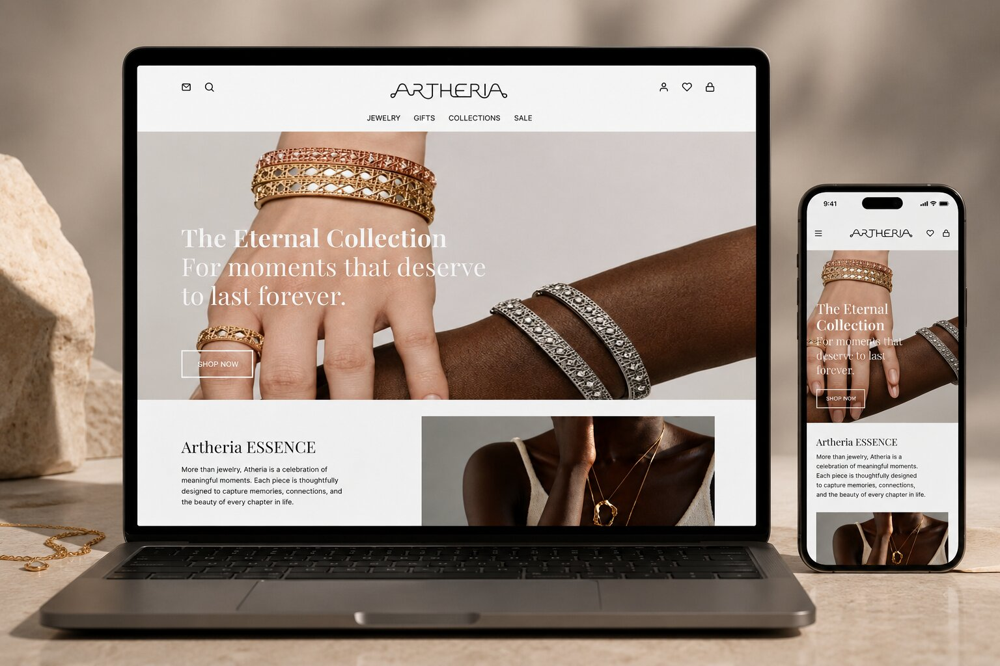
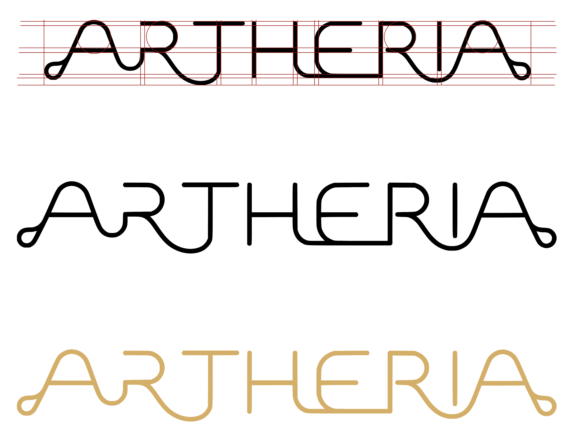
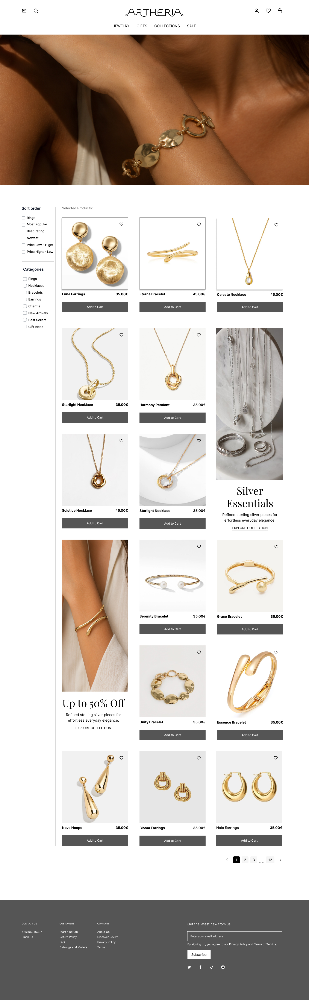
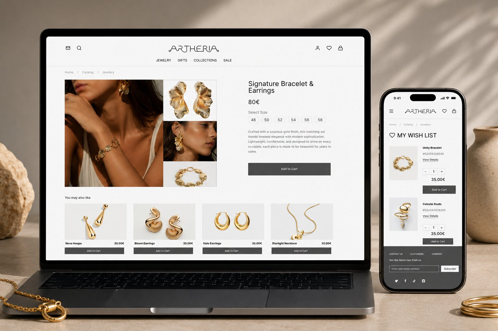

Jewelry Brand Website
A complete visual identity and website concept created for a luxury jewellery brand, combining elegance, minimalism and user-centred design.

Overview
This academic project focused on creating a complete digital identity for a luxury jewelry brand. The objective was to design an elegant and modern website capable of reflecting the values of sophistication, exclusivity and timeless design.
Role
UI Design
Brand Identity
Website Design
Software
Figma
Adobe Illustrator
The Challenge
The challenge was to create a premium visual identity while maintaining a clean and intuitive user experience. Every design decision was carefully considered, from typography and colour palette to spacing and interface hierarchy.


The Solution
Using Adobe Illustrator and Figma, I developed the logo, colour palette, typography system and complete website interface. The final result presents a refined digital experience focused on clarity, elegance and usability.
